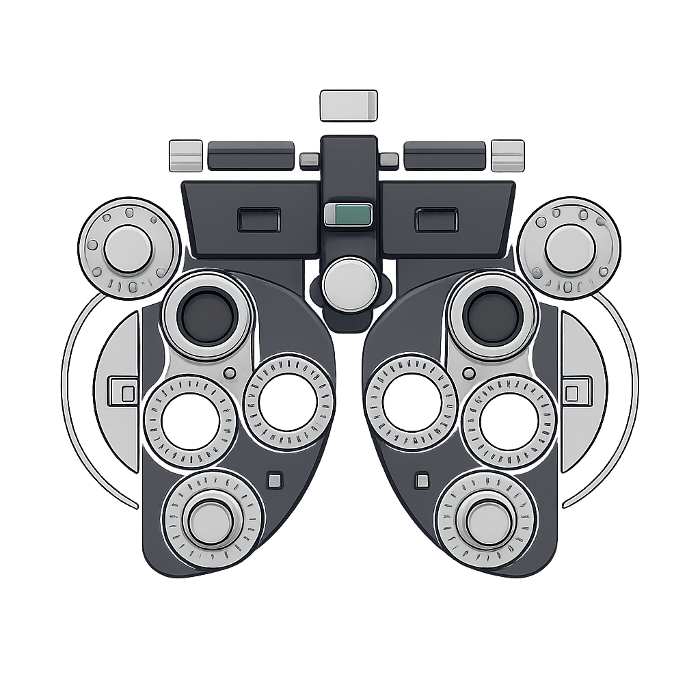

Find the code display settings that suit your eyes
Code Phoropter helps you find the font, size, weight, line height and color scheme that you read code best with. It shows the same code in two versions and asks which one you prefer, the way an optometrist asks "which is better, 1 or 2?". Each answer narrows the field until one combination remains.
It is open source and runs in your browser.
Reading code on a screen got harder for me with age. Settings that worked in my twenties now strain my eyes, most of all in long sessions and in poor light.
Font showcases did not help. They show each font alone, and there are too many combinations of font, size and color to try by hand. Comparing two options at a time is easy, and it happens on your own screen, in your own light.
Your choices and your results stay in your browser. We do not collect them.
Code Phoropter compares these coding fonts:
| Font Name | Source | Ligatures | Notes | Sample |
|---|
Note: System fonts are only available if installed on your computer. Other fonts load from this site or from Google Fonts when selected.
The color schemes follow popular editor themes:
| Theme Name | Origin/Author | Description | Sample |
|---|
| Theme Name | Origin/Author | Description | Sample |
|---|
Repository: github.com/staffanm/code-phoropter